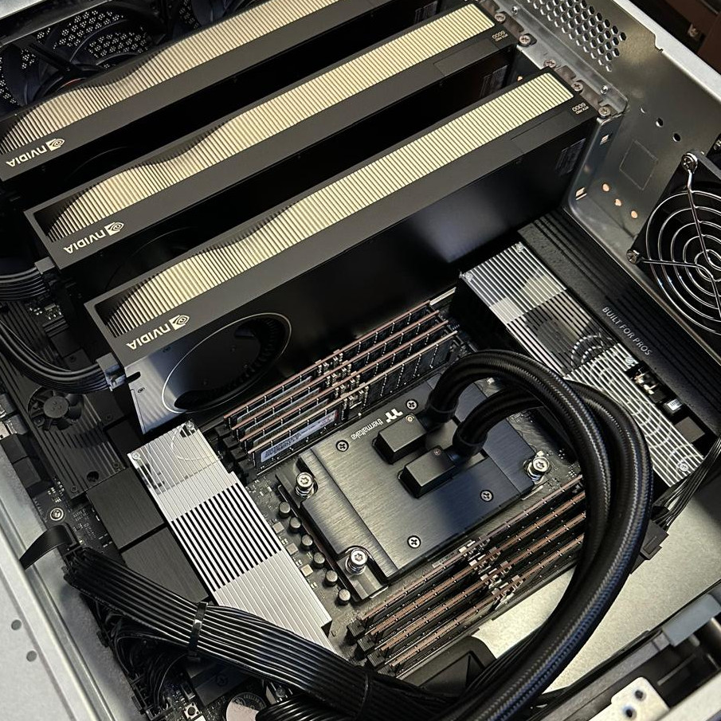

Especificaciones del Sistema
Procesador
AMD Ryzen Threadripper PRO 9995WX (96 Núcleos)
Gráficos / VRAM
3x NVIDIA RTX 6000 PRO Max-Q (288 GB VRAM)
Memoria RAM
512 GB DDR5 ECC (Octa-Channel)
Almacenamiento
32 TB NVMe PCIe 5.0 (RAID 10)
GPU: NVIDIA RTX PRO 6000 Blackwell Max-Q
El corazón computacional del Titán lo forman tres unidades NVIDIA RTX PRO 6000 Blackwell Max-Q Workstation Edition. Esta edición Max-Q limita el consumo a 300 W por tarjeta sin renunciar a la totalidad del silicio Blackwell, permitiendo escalar hasta 4 GPUs en un mismo chasis con refrigeración por aire estándar — una configuración inviable con la variante de 600 W.
Arquitectura Blackwell — Silicio de centro de datos en formato workstation
5ª GEN TENSOR CORES · 4ª GEN RT CORESBlackwell introduce en esta generación soporte nativo para FP4 y FP8 en los Tensor Cores de 5ª generación, duplicando efectivamente el throughput de inferencia respecto a la generación Ada Lovelace. Los RT Cores de 4ª generación aceleran tanto el ray tracing físico como los Mega Geometry pipelines, lo que convierte a la tarjeta en una herramienta mixta válida para entrenamiento, inferencia y visualización científica (digital twins, simulación molecular, Omniverse).
Especificaciones por tarjeta
Memoria
96 GB GDDR7 ECC
Ancho de banda
1.792 GB/s
Rendimiento IA (FP4)
3.511 TOPS (con dispersión)
Precisión simple (FP32)
110 TFLOPS
RT Cores (4ª gen)
333 TFLOPS
Consumo (TGP)
300 W (Max-Q)
Interfaz
PCIe Gen 5 x16
Salidas de vídeo
4 × DisplayPort 2.1
Codificadores
4 × NVENC (9ª gen) · 4 × NVDEC (6ª gen)
Factor de forma
Dual-slot · 26,7 × 11,2 cm
Multi-Instance GPU
Hasta 4 instancias aisladas
Escalabilidad
Hasta 4 GPUs por sistema
Potencia agregada del nodo (3 × RTX PRO 6000 Max-Q)
CLÚSTER GPU UNIFICADO- 288 GB de VRAM GDDR7 ECC agregados — suficiente para fine-tuning de modelos densos de hasta ~70 B parámetros en FP16 sin necesidad de offload a CPU.
- ~10.533 TOPS de capacidad teórica FP4 (con dispersión) — equivalente en precisión baja a un pequeño clúster HPC tradicional.
- 330 TFLOPS FP32 combinados para cargas científicas de doble uso (CFD, Monte Carlo, bioinformática) que no se benefician de precisión reducida.
- 900 W de envoltura térmica total para la parte GPU — refrigerable por aire en un chasis workstation estándar, a diferencia de las variantes full-power de 600 W/tarjeta.
- Hasta 12 instancias MIG simultáneas en todo el nodo (4 por GPU), habilitando el aprovisionamiento de slices aislados para estudiantes o grupos de investigación sin necesidad de reservar una tarjeta entera.
¿Por qué la edición Max-Q?
Densidad sin líquido
Al rebajar el TGP de 600 W a 300 W, Max-Q mantiene las 24.064 unidades CUDA activas pero permite apilar 3 tarjetas con refrigeración por aire en un chasis de torre estándar, sin bucles de líquido personalizados.
Eficiencia por vatio
El diseño Max-Q mueve la tarjeta a un punto de la curva voltaje-frecuencia donde la pérdida de rendimiento es inferior al 15% respecto al modelo full-power, con la mitad del consumo. Relación perfecta para cargas mantenidas 24/7.
Memoria ECC crítica
GDDR7 con ECC detecta y corrige errores de bit en la VRAM — imprescindible en entrenamientos largos (>72 h) donde un bit flip no detectado contaminaría silenciosamente todos los pesos del modelo.
Particionado MIG
Multi-Instance GPU parte cada tarjeta en hasta 4 particiones hardware con memoria, caché y planificador independientes. Compatible directamente con el passthrough PCIe de Proxmox para aislar cargas multi-tenant.
1. Infraestructura Base y Gobernanza
El servidor Titán no opera como un monolito estático. Para maximizar la rentabilidad de su enorme capacidad computacional, implementamos una capa de hipervisor de nivel empresarial que nos otorga el control absoluto de la topología.
Proxmox Virtual Environment (VE) 9.1.1
HIPERVISOR BARE-METALJustificación: Instalar Proxmox directamente sobre el hardware (bare-metal) nos permite "jugar" con la asignación de recursos a nuestro antojo. En lugar de limitar las 3 GPUs RTX 6000 a un único entorno, Proxmox nos permite aislar cargas de trabajo y aprovisionar máquinas virtuales (VMs) específicas para investigadores o equipos de estudiantes sin que interfieran entre sí.
- PCIe Passthrough (IOMMU/VT-d): Asignación directa y exclusiva de las GPUs físicas a diferentes VMs. Al inyectar la GPU sin capas de emulación intermedias, el entorno virtual alcanza un rendimiento equivalente al nativo (Zero-Overhead), crucial para aprovechar los 288 GB de VRAM.
- Particionamiento de CPU/RAM: Los 96 núcleos del Threadripper PRO y los 512 GB de RAM ECC operan bajo una política de distribución dinámica (Thin/Thick Provisioning), asegurando que ninguna VM sature el ancho de banda del Octa-Channel completo a menos que esté autorizado.
- Clusters Efímeros: Posibilidad de desplegar laboratorios de Deep Learning bajo demanda y destruirlos o pausarlos ("Snapshots") cuando finaliza un experimento, optimizando el consumo energético.
2. Despliegue del Stack Científico (Paso a Paso)
Una vez provisionada la Máquina Virtual a través de Proxmox con acceso directo a las GPUs solicitadas, el aprovisionamiento del entorno lógico sigue un flujo estricto para garantizar la máxima eficiencia computacional, evitando cuellos de botella por dependencias desactualizadas.
Paso 1: Entorno de Ejecución y Drivers Base
- Ubuntu Server 24.04 LTS: Actúa como el sistema operativo huésped oficial. Justificación: Ofrece el mayor soporte a nivel de comunidad e integraciones validadas por NVIDIA (drivers empaquetados) y estabilidad empresarial a largo plazo.
- NVIDIA Driver 550.x + CUDA Toolkit 13.2: Capa de comunicación de bajo nivel. Justificación: Es el requisito indispensable para operar correctamente la arquitectura computacional de las RTX 6000 PRO Max-Q y acceder a sus Tensor Cores. Integrado con cuDNN 9.x para aceleración nativa.
- Docker Engine (v26.x) + NVIDIA Container Toolkit: Entorno de virtualización lógica. Justificación: Instalar dependencias globales de Python directamente en el OS genera conflictos catastróficos. Al usar contenedores con acceso PCIe, aislamos los experimentos garantizando reproducibilidad absoluta.
Paso 2: Frameworks de Entrenamiento y Fine-Tuning
- PyTorch (con FlashAttention-2): Motor de cómputo tensorial. Justificación: FlashAttention-2 es innegociable; optimiza matemáticamente cómo los LLMs calculan la atención, reduciendo exponencialmente el consumo de los 288 GB de VRAM totales durante entrenamientos de contexto extendido.
- DeepSpeed o Ray: Orquestador distribuido. Justificación: Fundamental para metodologías ZeRO (Zero Redundancy Optimizer). DeepSpeed fragmenta inteligentemente los gradientes entre las 3 GPUs balanceando la carga, permitiéndonos re-entrenar modelos masivos que no cabrían en una sola tarjeta.
- Unsloth & Axolotl: Entornos de Parameter-Efficient Fine-Tuning (PEFT). Justificación: Orquestan procesos complejos de IA Generativa. Aceleran la implementación de métodos matemáticos como LoRA, QLoRA y alineamientos (DPO/RLHF), usando hasta un 60% menos de memoria en las interacciones y doblando la velocidad computacional.
Paso 3: Datos Sintéticos y Ecosistema RAG
- LangChain / Distilabel / LlamaIndex: Motores de flujos e inyección técnica. Justificación: Encargados principal de la manipulación de corpus masivos, transformando PDFs y material crudo del centro en "datasets instruccionales", automatizando la ingesta de conocimiento a la IA.
- Sentence Transformers (Modelos BGE-M3): Traductores de embedding semántico. Justificación: Indispensables para proyectar textos a un espacio latente de alta densificación (vectorizado), permitiendo representar similitudes en una lógica multidimensional estandarizada.
- Qdrant o ChromaDB: Bases de datos vectoriales. Justificación: Almacenan de manera altamente estructurada y buscan los embeddings generados a altísima velocidad mediante comparaciones de simillitud cósena o MTEB (búsqueda asimétrica para RAG).
Paso 4: MLOps, Telemetría e Inferencia
- vLLM o Text Generation Inference (TGI): Motores backend de Serving. Justificación: Sirven los modelos procesando la memoria KV Caché con algoritmos como PagedAttention y agrupamiento de respuestas en base continua (Continuous Batching), multiplicando el rendimiento predictivo (throughput) en producción.
- Weights & Biases (W&B) / MLflow: Hub operativo de Machine Learning (MLOps). Justificación: Indispensables para graficar la función de pérdida (Loss Tracking) a lo largo del tiempo, trazando hiperparámetros y alertando de condiciones perjudiciales de sobreajuste (Overfitting).
- NVIDIA DCGM + Prometheus + Grafana: Stack de Monitorización Físico. Justificación: Las cargas de inferencia y las 3 GPUs RTX consumiendo al máximo estresan el equipo drásticamente. El stack de telemetría recopila y alerta ante estrangulamientos térmicos, vatajes e ineficiencias críticas del bus PCIe.